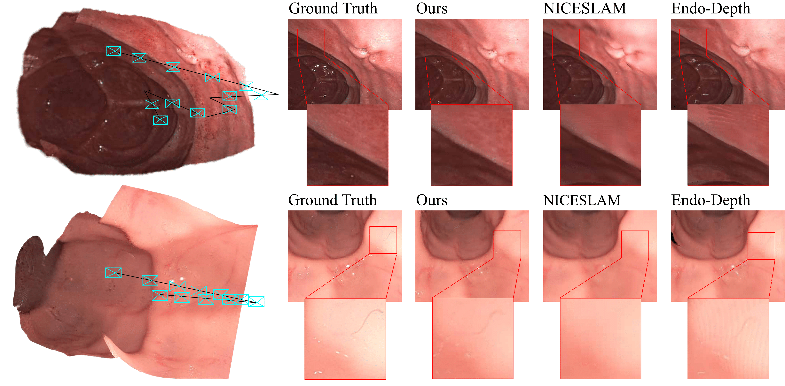

Abstract
Precise camera tracking, high-fidelity 3D tissue reconstruction, and real-time online visualization are critical for intrabody medical imaging devices such as endoscopes and capsule robots. However, existing SLAM (Simultaneous Localization and Mapping) methods often struggle to achieve both complete high-quality surgical field reconstruction and efficient computation, restricting their intraoperative applications among endoscopic surgeries. In this paper, we introduce EndoGSLAM, an efficient SLAM approach for endoscopic surgeries, which integrates streamlined Gaussian representation and differentiable rasterization to facilitate over 100 fps rendering speed during online camera tracking and tissue reconstructing. Extensive experiments show that EndoGSLAM achieves a better trade-off between intraoperative availability and reconstruction quality than traditional or neural SLAM approaches, showing tremendous potential for endoscopic surgeries.
Method

EndoGSLAM is an efficient dense RGB-D SLAM method for endoscopic procedures utilizing 3D Gaussians as the core representation. It begins with an innovative modification to the standard 3D Gaussian representation, initializing it to adapt to the complex environments encountered in endoscopy. After the initialization, we leverage differentiable rasterization to enable gradient-based optimization for optimizing the camera pose in each incoming frame. We then proceed to expand our 3D Gaussian representation into areas previously unobserved, thus complementing the scene. Finally, we propose a partial refinement strategy for efficiently optimizing the expanded 3D Gaussians.
Results and Comparisons

The render results of EndoGSLAM compared with traditional and neural SLAM methods. Note that the results of ORB-SLAM3 and Endo-Depth are acquired using volumic fusion, and ORB-SLAM3 used only keyframes during fusion, as only keyframes are used to construct the sparse map in ORB-SLAM3.
Ablation
Simplification plays a vital role in endoscopic scenes. Part (a) of the video displays the online rendering outcomes for EndoGSLAM-R with and without this process. Lacking simplification, there's a heightened need for optimization, which not only leads to unwanted view-independent color artifacts and also reduces stability. Part (b) shows the final reconstruction results of EndoGSLAM-H.
Bibtex
If you find this work helpful, you can cite our paper as follows:
@article{wang2024endogslam,
title={EndoGSLAM: Real-Time Dense Reconstruction and Tracking in Endoscopic Surgeries using Gaussian Splatting},
author={Kailing Wang and Chen Yang and Yuehao Wang and Sikuang Li and Yan Wang and Qi Dou and Xiaokang Yang and Wei Shen},
journal={arXiv preprint arXiv:2403.15124},
year={2024}
}